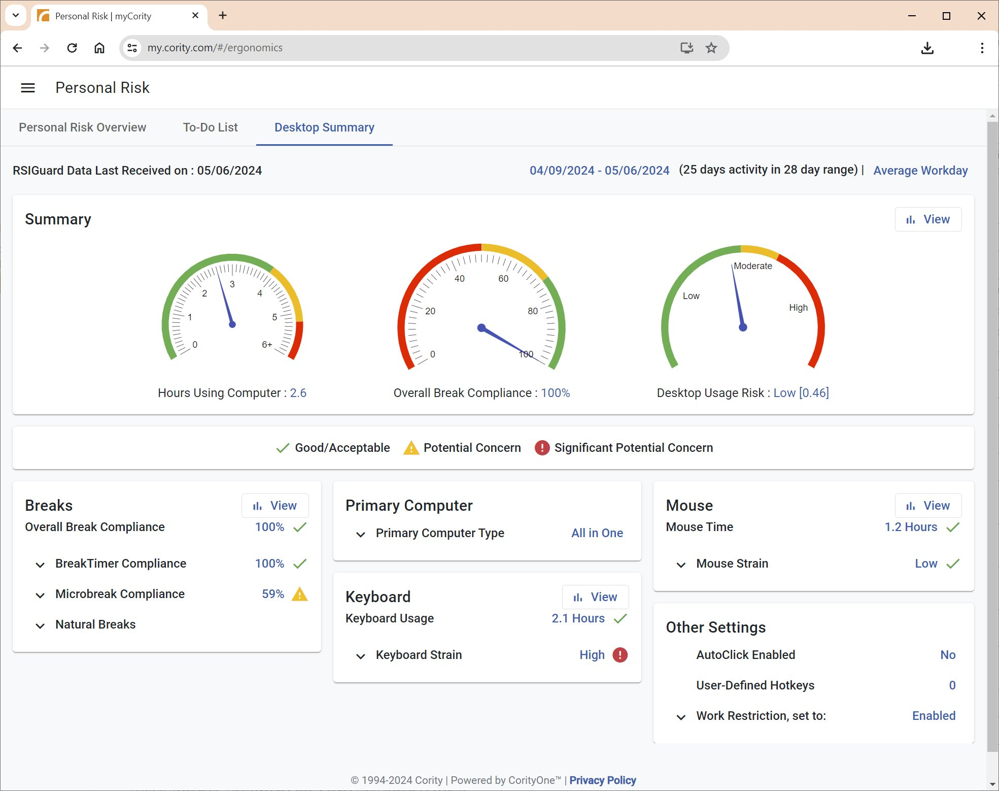
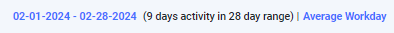
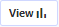
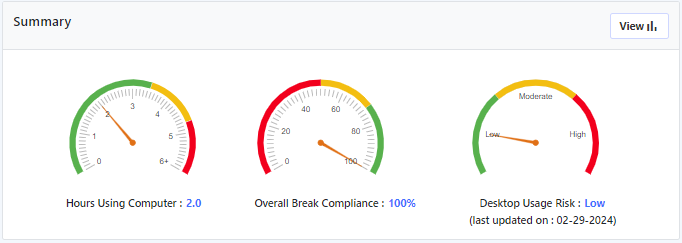

The Desktop Summary provides a summary of RSIGuard information. It is similar to the UserInsight Report (which provides high-resolution graphs of desktop data) and Desktop Risk Action Report (which provides summaries of recommendations based on desktop data). The Desktop Summary provides your average data for a selected date range, and it indicates if some factors may be of concern.

By default, the Desktop Summary shows a report based on the last 4 weeks (28 days) of usage. However, you can adjust the date range by clicking on the date range shown at the top right of the dashboard. Many of the values shown are averages, and you can change whether these values represent your "Average Workday" or "Average Weekly Total" by clicking on the selector to the right of the date range.

Click on the dates to adjust the date range. Click on "Average Workday" to choose between day or week averages.
Across the top of Desktop Summary is the summary of 3 key statistics: Average Hours on the computer, Overall Break Compliance, and your Desktop Usage Risk level. You can see more details about your computer usage by exploring the sections below the summary. Clicking the

button shows a bar chart of your Overall Break Compliance and Hours Using Computer statistics.

The summary shows 3 key statistics.
The Breaks, Primary Computer, Keyboard, Mouse and Other Settings sections show additional statistics about your use of the computer, and settings within RSIGuard. Some statistics are also tagged with an icon indicating if the value of the statistic is Good/Acceptable, or a Potential Concern. If an item is marked Potential Concern or Significant Potential Concern, it doesn't necessarily indicate a problem - as every value must be interpreted in the full context of your computer use. It does mean that your value for that statistic may put you at a higher risk for developing discomfort, or having existing discomfort worsen. If you are experiencing discomfort or are high risk, items that are flagged as a potential concern should be considered closely. Click on any button to view associated detailed graphs.
What do the statistics mean?
On the Desktop Summary, you can click on any item's value (in blue) to bring up context help that explains the statistic in more detail.
There are 3 types of statistics shown on the Desktop Summary:
Averages
Current Values
Desktop Risk
Averages: Averaged statistics are calculated differently based on whether you have selected "Average Workday" or "Average Weekly Total".
For "Average Workday", each averaged statistic is calculated by summing all the values for that statistic for each active day in the selected date range, and then dividing the total by the number of active days. An active day is a day with at least 6 minutes of user activity. For example, if you select a 28-day range, and you have 4 active working days in that 28-day period, and the 4 days had keyboard times of 2, 3, 3, and 4 hours, the Desktop Summary would display:
(Sum of all active days' values)/(Number of active days), or
(2+3+3+4)/4
For "Average Weekly Total", each average statistic is calculated by summing all the values for that statistic for each active day in the selected date range, and then dividing the total by the number of weeks in the selected date range (which can be fractional). For example, say you have a 28-day date range specified. If in week 1, you worked 2, 3 and 3 hours, and in week 2, you worked 3, 4, 4 and 5 hours, and in week 3 you didn't work on the computer, and in week 4, you worked 2 and 5 hour days, then your Average Weekly Total would be:
(Week 1 total+Week 2 total+Week 3 total+Week 4 total)/4, or
((2+3+3)+(3+4+4+5)+(0)+(2+5))/4
Multiple Computers Note: The above formulas are true for both aggregating statistics (e.g., hours, strain), and percentage statistics (e.g., compliances, "percent of time" statistics). However, there is a slight difference for days on which the user has data reported from 2 or more computers. For aggregating statistics, the values are simply summed together for the day. For example, if for a particular day you worked 1 hour on computer A and 2 hours on computer B, the statistic reflects 3 hours of work that day, independent of the distribution between computer A and B. However, for non-aggregating statistics, this would not make sense. Imagine on Monday you worked 1 hour on computer A and your break compliance was 80%, and 2 hours on computer B and during that time your break compliance was 100%, and then on Tuesday you worked 4 hours on computer A and my compliance was 90%, and on Wednesday you worked 2 minutes on computer A. For Monday, your compliance is weighted based on time, (80% X 1/3 + 100% X 2/3)=93.3%. On Tuesday your compliance is 90%. On Wednesday, you didn't work 6+ minutes, so this compliance is disregarded. Your compliance on the Desktop Summary would show (93.3% + 90%)/2=91.7%.
Current Values: Settings that correspond to a setting value report the most recent value reported on an active day within the selected date range. For example, if you select a 28-day range, and you have 4 active working days in that 28-day period, and the 4 days reported that your Willpower was Low on the first and second days, and High on the third and fourth, the Desktop Summary would report that Willpower was High, because it only looks at the fourth day's value. These statistics do not change based on the "Average Workday"/"Average Weekly Total" selection. And, if you use multiple computers and the settings are different between computers, the value shown on the Desktop Summary corresponds to your primary computer (which is the computer that myCority determines has the most recent usage).
Desktop Risk: This statistic is calculated by summing 6 risk components. The 6 components are calculated in 2 ways:
Overall break compliance & Microbreak compliance: These 2 components are calculated by using the "Averages" method described above.
Keyboard/Mouse Time/Strain: These 4 components are calculated by summing the total exposure within the selected date range, and dividing the sum by the number of days in the date range (rather than by the number of active days). So, for example, in the "keyboard times" example above, the risk component would be based on [(2+3+3+4)/28]. For this reason, the contribution of risk from this is not based on the average workday, but rather on the total exposure. So, someone with an average keyboard time of 4 hours per day who worked 28 days in the date range, would have higher risk contribution from keyboard time than someone with an average keyboard time of 4 hours per day who worked 20 days in the date range. What matters for these 4 components is the total exposure over the time period, not the daily average. So working a 7-day work week means a higher risk than a 4-day or 5-day work week (all other factors being equal).
The Desktop Risk statistic does not change based on the "Average Workday"/"Average Weekly Total" selection. To avoid confusion, it is not displayed on the myCority Desktop Summary when "Average Weekly Total" is selected.
Troubleshooting: Reasons You May Not See the RSIGuard Data Your Expect
If you are viewing the Desktop Summary and you don't see any data, or the data doesn't match what you expect, here are some possible reasons.
If there is no data:
Confirm that you have RSIGuard installed, and that it has been installed for over 36 hours. RSIGuard sends data for the day sometime the next day. So if you installed RSIGuard on Monday, it will send Monday's data sometime on Tuesday.
Confirm that your computer has internet access and can access www.cority.com - if not, ask your local IT if there is a policy that is preventing access.
Some organizations have a privacy policy that allows you to opt-out of sending data to Cority (or automatically opts you out). In this case, even though you may be able to view your data locally on your computer, you won't see it online.
If there is data, but it doesn't match what you expect:
Make sure the date range you have selected to view is what you want.
Remember that the Desktop Summary shows data from all your computers that are connected to Cority. So, for example, if you worked 3 hours a day on your main computer, but sometimes also work an hour or two on another computer, your daily average will be over 3 hours per day. You can view data from just your computer by holding the Ctrl key when you click on the RSIGuard Dashboard button and selecting Longterm Usage Statistics.
If you don't understand the averages shown, click on the buttons to view the underlying data that is being averaged
 button to view associated detailed graphs.
button to view associated detailed graphs.